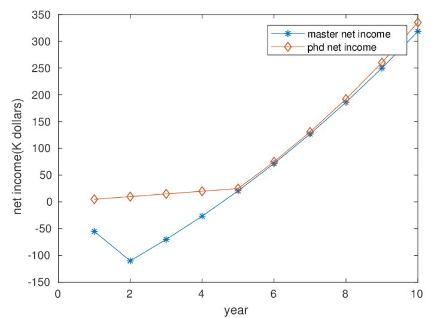

The introduction of American University
The introduction of American University
Frequently Asked Question
录取委员会看中什么?
博士研究生的录取其实看中的是研究经验。当然，托福和GRE分数，以及本科大学的排名也十分重要。对于GPA，相对前两者来说，其实并没有那么重要。
决定谁能得到这些就读机会的是每一个系的录取委员会。委员会成员每年由不同的教授组成，通常由教授阅读随即分配的申请资料，然后将申请者的质量做一个简单排序。然后这些被挑选出的候选人再拿到录取委员会之内进行投票。当然，每一个学校和每一个专业的做法都不太一样。
博士研究生和专业密切相关。因此委员会看中的是申请人对专业了解的情况。因此研究经验是最被看中的。你做过哪些研究，发表过哪些专业文章，逃不过教授的火眼金睛。教授会在看到这些经验的一瞬间，在心里有一个掂量。
有足够好的英语成绩(托福和GRE)是必备的。另外本科院校的排名和GPA也会被纳入考量因素。一句话，博士研究生的研究经验占据了整个申请的重中之重，学生在写个人申请时，也要重点陈述。其他条件，基本只是一些纳入考量的先决条件。
“套磁”有没有用?
估计没有哪一个申请过美国大学的学生，尤其是申请博士研究生的学生不知道什么是“套磁”的。在申请的过程中，一些申请者会和教授写电子邮件，进行学术探讨，这样学生可以在申请的过程中给自己添加印象分。
纵教授对我说，他每天都接到好几十封套磁信。然而，“套磁信”到底有没有用?这是很多学生的困惑。对这个问题纵教授说，“我每天接到很多套磁信，但是其中大部分的内容都是普通的打个招呼，表个决心，普通的介绍情况，这样的套磁信不会引起教授任何兴趣。但是，有很多学生认认真真地阅读过教授的学术论文，本着讨论问题的方式给教授写信。提出有价值的问题，这种邮件，我都不忍心不回!”
纵教授的回答很能说明问题，毫无目的套磁基本无效。而针对教授的研究方向做过研究的人，会引起教授的注意。“不过，”纵教授告诉笔者，“即便是非常有研究方向的套磁，能够对申请起巨大帮助的几率也不大。因为套磁成功其实有三个条件。第一，你的邮件真的打动了教授，让教授愿意吸收你。第二，教授本人在录取委员会里，并有一定的发言权。第三，教授有研究经费并且愿意给你。而同时满足三个条件的并不多见。
“对于中国学生，套磁信也许并没有坏处。但是要真正的做一份成功的申请，还是要踏踏实实地把握好每一个细节!”
中国学生的通病是什么?
-
中国学生的个人陈述一般都要有华丽的开篇和结尾。中间的用词也是复杂，有时候看到很多长句。而美国人写的个人陈述语言却相对简单。形成这个现象的原因一方面是中国学生用非母语写作，因此不可能和美国人一样自然。另一方面，中国人认为复杂的、华丽的英文就是好的，这是一个误区。其实简单朴实的语言更打动人。 写作中的逻辑性更加重要。
-
在面试中，中国学生面对不会的问题特别紧张，而且特别注意要对教授提供一个正确答案。往往在一个面试中，教授有时候会提出一些专业问题，而中国学生会很注重结果。一旦认为这个问题不懂，我面试就砸了。
事实并非如此。教授考察的是你面对问题的态度和解决问题的思路。如果你没有听清问题，甚至可以向教授提问，“你能帮我解释一下问题吗?”很多中国学生遇到不会的问题很少会说：“对不起，这个问题我没有研究过。”而是往往会尽量拼凑起有限的知识胡乱回答。而提供的答案往往和问题没有关系。“这些都是会减分的行为!”纵教授说。
Diference between Ph.D and Master
内容来源：
- 水哥谈留学-美国理工申请，选硕士（MS）还是博士（PhD） 来自：曹贤水
- 留学美国读CS的硕士比博士经济上更合算么？未必！ 来自：Chen Qian 助理教授 加州大学圣克鲁斯分校
Overall Description
申请MS，意味着很可能没有奖学金，意味着作为成年人，还要花家里十几万甚至几十万的存款；申请PhD，意味着自己要在未来5年-8年的时间活在一个充满实验，充满文献的环境中呆着，如果碰着个人品（RP）不好的教授，将会非常郁闷。申请MS，意味着可以早一点找工作，因为门槛低，找到好工作的机会在美国来说，比较容易；申请PhD，意味着一年几万美元的奖学金，学校给的多的话，还能买车、顺带养个老婆孩子啥的，回国还能有机会进入高校，要是混得好整一堆grant，小日子将很滋润。
美国的硕士和博士培养的目标和思路是不同的！
美国的4年本科习惯叫College，之后是graduate school（既研究生教育，其实国内也这么叫，只不过大家现在习惯把硕士研究生简化成研究生，博士研究生简化为博士。其他的Professional school，比如法学院，医学院，牙医学院，药学院啥的也是graduate school是有了Bachelor之后才能读的，这个就不展开了）。美国学校基本上把研究生教育分成两类，一类是硕士，一类是博士。记住，是并列的关系，而不会像国内，普遍是递进关系。
大家可以看看CMU的一个教授对PhD的描述：
A Ph.D. is a long, in depth research exploration of one topic. By long we’re typically talking about 6 years. By in depth we mean that at the end of the Ph.D. you will be the world expert or close to it in your particular area. You will know more than your advisor about your particular research area. You will know more about your research than anyone at your school. By one we mean that by the last couple years of your Ph.D., you will typically be working on only one narrow problem. The Ph.D. is not about breadth, it is about depth.
而Master呢，强调的是“breadth”。一个MS学生一年就得学6-8门课（总共27-36个学分左右），可一个PhD6年才会上不到10门课（上个一年左右，就开始自己的课题研究了，如果之前在国内读过硕士，老板觉得课程知识结构够了，甚至可以直接进入课题——这也让大家知道，所谓的美国不认中国硕士学位是个挺扯的说法，其实是人家很多很多博士项目本来就只要你有本科学位就可以直接申请，而不是硕士学位不受认可。。。要跑题了，说回来）。硕士以应用、就业为导向，而PhD以深入的学术研究为导向。所以培养的目标不一样，适合的人群就不一样。大家一定要根据自己的情况进行选择。
根据我这些年的总结，得出一个学位选择的三原则，送给大家：
- 如果自己喜欢搞学术、适合PhD生活，那么首选PhD；
- 在不确定自己是不是足够喜欢MS or PhD的时候，同时家里又能够为自己提供30w左右的留学预算而不会严重影响到家庭的生活质量的情况下，首选MS；
- 不到万不得已的情况下，不要为了钱而选择PhD。
第一条原则比较好理解，适合的、喜欢的才是最好的。自己喜欢，就不会觉得在5~8年甚至更长时间里在某一个细小问题上作深入的研究是件痛苦的事情，无法坚持，也就能够成功。而且这种适合是能够带来丰厚的物质回报的。因为经过这么长时间的研究，你肯定会成为这领域中的专家，人家值得在你身上花这么多钱。（当然，如果有回国当教授的打算，PhD也是必要的，否则将会无法和别人竞争）
第二条原则我要重点解释一下，我觉得对国内学生比较有意义。因为很多之所以申请PhD是因为觉得PhD比MS高一级，出来更好找工作（其实事实上在美国其实是反过来的），并不是因为自己喜欢。因为各种误解而做出错误选择的人非常多。我之所以总结出第二条原则，依据如下：
第一，选MS有利于帮助自己找到真正适合自己的方向。国内在基础教育阶段，对于学生的兴趣引导和启发比重是比较小的，更多的还是升学率的压力。所以很多学生是不太清楚自己到底喜欢做什么，擅长做什么。贸然选择PhD，很有可能会在一段时间后后悔自己的决定。而选择MS，接触到一个新的环境中的各种新的、丰富的信息，经过自己的尝试，找到最适合自己的方向的几率将更大。（这种情况我这些年见到很多。就像我一个学生去美国之后，后来过年打电话给我拜年时说多亏我当时力劝他申请硕士而不是博士，要不然他肯定会后悔）
第二，如果选择的是MS，一来在申请上，更容易去到一个更高的优秀学校平台。这样的话，学校的师资力量、氛围、校友圈，对未来的就业、职业发展有很好的帮助。因为同一所学校，硕士和博士录取的难度是不一样的，比如不少前20学校的CS专业，PhD国际学生也就招不到20个，每年申请的人有上千名，而qualified
candidates有上百人。。。竞争的惨烈程度性由此可见一般。而他们的MS一年却会招少则五六十，多则二三百，机会无疑要大很多。
第三，选择MS，不会损失太多时间和金钱。由于美国的自由性和研究生制度的特性，MS转PhD，PhD转MS是一件比在国内容易很多的事情。所以选择MS过去，无论是读完MS转去其他学校读PhD，还是在本校直接转PhD，都是比在国内以国际学生身份申请要容易的事情。（很多学校，第一年MS和PhD上的课程基本是差不多的，学分可以非常顺利转到PhD阶段）而且人在美国之后，拿到奖学金的机会会比在国内申请要多。因为有些奖学金是只对在读学生开放的，更重要的是你人在学校了，教授上过你的课，知道你的平时表现或者能见你面跟你具体面谈，和一个只能从6张纸上获取的信息靠谱程度，能一样吗。。。所以先用MS过去美国，在时间和金钱上并不会有什么损失。（这个是对想读PhD的学生说的，你要是只想MS，那么博士的这些优势本来就对你没意义）
第四，选择MS过去之后，自己在选择导师的时候更有主动权，“离婚率”会大大降低。有不少专业的PhD是没有设置rotation的（生物类的有不少好学校都是先rotation，但CS EE这类工程项目好多都是老板有项目直接定的），这样在申请的时候，或者刚到美国没多久就要制定导师了。虽然你们会花较多的时间去研究教授的研究方向和自己背景的匹配性，自己是不是感兴趣。但是教授的人品，性格，即使在他们的主页上，也是很难了解清楚的。如果一不小心选了一个人品不好的老板，那么有可能会导致几年的PhD生活过得极其郁闷和痛苦。而选择MS，那么自主权更多的就会在自己的手里，到学校之后，有更多的渠道去了解一个教授的人品、对待学生的态度这些很重要的信息。有了这些信息，错误“结合”的概率将大大降低。
关于第三原则，之所以会有这种现象，更多的是由于咱们国家的国情所导致的。绝大多数人出国都是为了奔一个好前程or“钱程”。我们强调，首先尽量在前两个原则就解决问题。如果没有资金支持，自己又真的不喜欢读PhD，或者感兴趣的专业奖学金无法拿到，要么选择能够给你全奖的MS（虽然很难，但是有机会；另外可以考虑加拿大、新加坡或者香港做跳板）。要么去美国读PhD，但尽量把PhD念完，认真做课题。如果真的要转去其他专业，也要把人做好一点，别让教授因此否定整个中国的学生，或者自己母校的学生。
曾经很多中国学生（包括清华北大等中国最优秀学校出去的学生）为了出国，为了奖学金，会选择PhD，在申请时会告诉教授自己多么多么喜欢PhD，喜欢教授所作的课题。而到了美国一两年之后，面对外面的花花世界，决定提前毕业，然后背着老板去找工作，一旦找到工作就放老板鸽子。美国人是比较强调自由的，会非常尊重学生们的选择，所以美国的PhD
candidates在读PhD的过程中，只要拿够足够的学分之后是可以拿着硕士学位毕业的。刚开始，美国的教授看到中国学生申请提前毕业，多数会尊重学生的选择，放学生走。可是后来当老美们发现这种现象越来越多，出现在中国学生身上的频率很高，并最终明白真正原因时，他们就会非常气愤。因为教授们从自己的项目经费里掏钱招PhD是来帮自己做课题的，好不容易培养2年，正准备出成果呢，结果学生放自己鸽子了，浪费了钱不说，更关键的是重新招人培养人周期很长，如果自己的成果一直出不来，就很难评上Tenure（终身教授）而如果一个教授在学校7年左右的时间不能成为Tenure的话，就得卷铺盖走人。所以有些教授明确在自己的主页中声明，不再招收中国学生。（请见ZZ一Michigan教授给清华PhD申请者的拒信 ）对于那些要转MS的学生，有些老板就让系里不给学位，不放人。我曾经在网上认识了一名国内的留学生。自己找到工作了想毕业，老板不放。于是两个人就僵持着。学生天天在家里睡大觉，老板也不让他毕业。所以说，希望大家一定让自己去适用前两个原则。这样才是符合留学的本意的。
经济面建模
作为一个科学工作者，当然说干就干，建一个模看看吧。于是我建了下面一个模型：
读CS的Master，设：
为期两年，每年的学费为$35K（我取了我们UCSC的数据，不过私立学校更贵，会到45K，有些学校更便宜，可能25K，取35K基本差不多）
每年的生活费20K（加州大学的数据，美国其他州会较低）
第三年参加工作，税后的收入70K（经统计，CS硕士学位的软件工程师平均工资税前89K(Master of Science (MS), Computer Science (CS) Degree Salary)，因此70K不算低估），生活费用30K（工作基本在加州、纽约、西雅图等开销较高的地区）。每年的工资涨幅为5%（这个数据基本不改变最后的结果，设为10%也一样）
读CS的PhD，设：
为期五年，每年学费由学校或导师给交了，另有税后25K的生活补贴（加州标准，其他州可能只有20K，但生活费同样下降，因此没区别）
每年的生活费20K
第六年参加工作，税后的收入80K（经统计，CS博士学位的软件工程师平均工资税前106K(Doctorate (PhD), Computer Science (CS) Degree Salaries)，因此80K不算高估）。生活费30K。每年的工资涨幅为6%（都PhD了，总要稍微比Master高那么一点点吧，当然这个数据不改变最后结果，设为10%也一样）
下面是我的博士生画的比较图：

我们发现，CS PhD的净收入恒高于硕士。再考虑到通货膨胀率，其实第一年欠下的学费后面需要更多的钱才能补上，所以差距应该更明显。
深度讨论
- 问： PhD看起来也没比Master多多少钱啊
答：注意我的前提是“即使你只看钱”。你可能还看其他的价值，比如你至少比master多了一个phd degree啊。比如你的职业道路更广，可以进公司的研究所，进国家实验室，进大学做教授，可以海归青年千人，绿卡更容易拿到，等等。
- 问：我申Master可以申到CMU和USC，但是申PhD只能申到Texas A&M或者UCSC
答：在中国，可能985的学生和非985的学生在招聘、起薪上有很大区别。在美国，进公司主要靠自己刷题和面试。TAMU的phd只可能比CMU的master更好找工作。当然CMU的校友人脉大一点，但phd还有你的导师&师兄师姐人脉啊，那可比校友人脉给力多了。
- 问：但我如果能去CMU，我爸妈在邻居面前更有面子啊
答：下一题吧
- 问：什么样的条件可以伸到PhD全奖？
答：985学校的（或准985，如北邮、西电），本科平均分85左右，基本申请10个以上的学校，就能申请到全奖。即使你不是985本科，没关系，去好的实验室做一流的科研、发表一些优秀的论文、GPA 90以上、有著名学者推荐，等等无数途径，也可以拿到phd全奖。——别问我具体怎么操作，超纲了。
- 问：读PhD碰到变态导师怎么办
答：现在信息这么发达，去打听一下就知道导师人怎么样了啊。
- 问：我读了phd发现自己不适合怎么办
答：那这时转硕士也是正确的选择
- 问：你是不是招不到好学生所以才写这篇文章来引诱学生读PhD啊
答：我现在的学生很优秀，每年也有很多好学生申请我PhD，忍痛拒掉里面的大部分。只是看到母系的学生对phd不感兴趣，感到很可惜。
- 问：你是想劝大家都读PhD么
答：当然不是，读博士要量力而行。我是想劝那些有能力、有动力读博士，但是因为“读硕士更划算”的言论而放弃的学生，读博士。
- 问：你的模型还有这里那里不大对，我来调整一下
答：感谢！不过给人生建模本来就不大可能是非常准确的。这里只是提供一种可能，所以我的标题说的是“未必”。